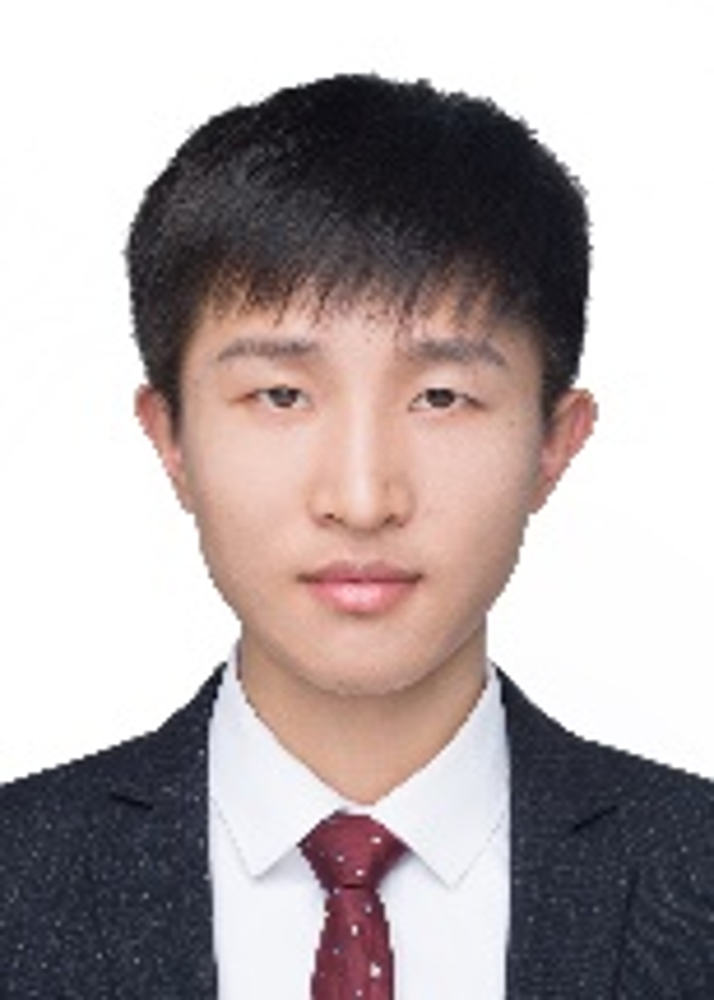

Kaiping Zhu 朱开平
Email: kaiping.zhu@ntu.edu.sg
Kaiping Zhu received his Master’s degree from Soochow University, where he conducted research on electrochemical and photoelectrochemical energy conversion under the supervision of Prof. Mark H. Rümmeli and Prof. Guifu Zou. He later obtained his PhD in Materials Science and Engineering from Nanjing University under the supervision of Prof. Yagang Yao, focusing on electrochemical energy storage systems. His current research interests center on PIM-based membranes for redox flow batteries and related coupled systems. In his leisure time, he enjoys playing basketball and table tennis, as well as travelling and exercising.